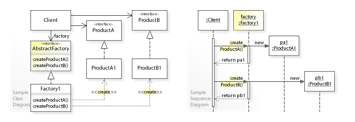
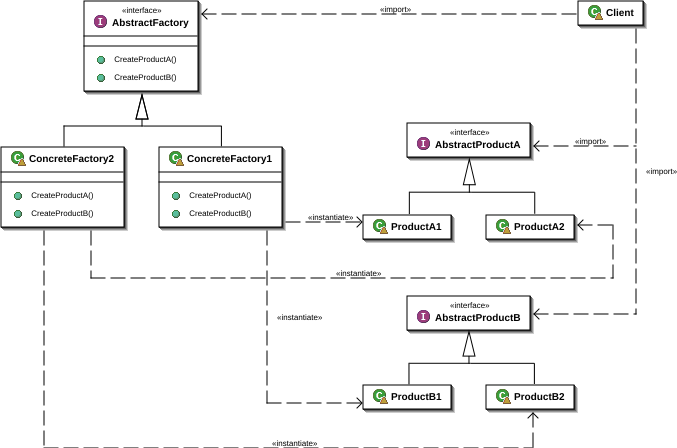
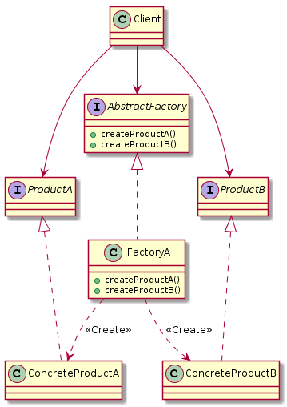

抽象工厂模式(Abstract Factory Pattern)
wiki: The abstract factory pattern provides a way to encapsulate a group of individual factories that have a common theme without specifying their concrete classes.

提供一个创建一系列相关或相互依赖对象的接口，而无需指定它们具体的类。
主要解决：主要解决接口选择的问题。
何时使用：系统的产品有多于一个的产品族，而系统只消费其中某一族的产品。
与工厂方法模式的区别为： 工厂方法是由子类自行决定实例化那个类，而抽象工厂是自己决定实例化哪个类。

抽象工厂设计模式解决了以下问题：
应用程序如何独立于其对象的创建方式？
一个类如何独立于它所需的对象来创建？
如何创建相关或依赖对象的族？
抽象工厂设计模式描述了如何解决这些问题:
将对象创建封装在单独的（工厂）对象中。也就是说，定义一个用于创建对象的接口（AbstractFactory），并实现该接口。
类将对象创建委托给工厂对象，而不是直接创建对象。
抽象工厂实例 UML：
1
2
3
4
5
6
7
8
9
10
11
12
13
14
15
16
17
18
19
20
21
22
23
24
25
26
27
28
29
30
31
32
33
34
35
36
37
38
39
40
41
42
@startuml
class Client{
}
interface ProductA{
}
class ConcreteProductA{
}
interface ProductB{
}
class ConcreteProductB{
}
interface AbstractFactory{
+ createProductA()
+ createProductB()
}
class FactoryA{
+ createProductA()
+ createProductB()
}
Client --> AbstractFactory
Client --> ProductA
Client --> ProductB
AbstractFactory <|.. FactoryA
ProductA <|.. ConcreteProductA
ProductB <|.. ConcreteProductB
FactoryA ..> ConcreteProductA:<<Create>>
FactoryA ..> ConcreteProductB:<<Create>>
@enduml

产品抽象接口
1
2
3
4
public interface ProductA
}
public interface ProductB
}
具体产品实现类
1
2
3
4
5
6
7
8
9
10
public class ConcreteProductA implements ProductA
public ConcreteProductA ()
System.out.println("init ConcreteProductA..." );
}
}
public class ConcreteProductB implements ProductB
public ConcreteProductB ()
System.out.println("init ConcreteProductB..." );
}
}
抽象工厂接口
1
2
3
4
5
6
7
8
9
10
11
12
13
14
15
16
public interface AbstractFactory
* 创建产品A
* @param cls 具体产品类
* @param <T> 具体产品类
* @return 具体产品类A
*/
<T extends ProductA> T createProductA (Class<T> cls) ;
* 创建产品B
* @param cls 具体产品类
* @param <T> 具体产品类
* @return 具体产品类AB
*/
<T extends ProductB> T createProductB (Class<T> cls) ;
}
具体工厂类
1
2
3
4
5
6
7
8
9
10
11
12
13
14
15
16
17
18
19
20
21
22
23
24
25
26
27
28
29
30
31
32
33
public class FactoryA implements AbstractFactory
@Override
public <T extends ProductA> T createProductA (Class<T> cls) {
if (null != cls){
try {
final Object o = Class.forName(cls.getName()).newInstance();
return (T) o;
} catch (InstantiationException e) {
e.printStackTrace();
} catch (IllegalAccessException e) {
e.printStackTrace();
} catch (ClassNotFoundException e) {
e.printStackTrace();
}
}
return null ;
}
@Override
public <T extends ProductB> T createProductB (Class<T> cls) {
if (null != cls){
try {
final Object o = Class.forName(cls.getName()).newInstance();
return (T) o;
} catch (InstantiationException | IllegalAccessException | ClassNotFoundException e) {
e.printStackTrace();
}
}
return null ;
}
}
场景类
1
2
3
4
5
6
7
8
9
10
public class Client
public static void main (String[] args)
AbstractFactory factory = new FactoryA();
final ConcreteProductA productA = factory.createProductA(ConcreteProductA.class);
final ConcreteProductB productB = factory.createProductB(ConcreteProductB.class);
}
}
抽象工厂模式的优缺点 优点：
抽象工厂模式隔离了具体类的生产，使得客户并不需要知道什么被创建。
当一个产品族中的多个对象被设计成一起工作时，它能保证客户端始终只使用同一个产品族中的对象。
增加新的具体工厂和产品族很方便，无须修改已有系统，符合“开闭原则”。
缺点：
产品族扩展非常困难，要增加一个系列的某一产品，既要在抽象的 Creator 里加代码，又要在具体的里面加代码。
抽象工厂和工厂方法的对比
工厂方法模式
抽象工厂模式
针对的是一个产品等级结构
针对的是面向多个产品(产品族)等级结构
一个抽象产品类
多个抽象产品类
可以派生出多个具体产品类
每个抽象产品类可以派生出多个具体产品类
一个抽象工厂类，可以派生出多个具体工厂类
一个抽象工厂类，可以派生出多个具体工厂类
每个具体工厂类只能创建一个具体产品类的实例
每个具体工厂类可以创建多个具体产品类的实例
简单工厂模式： 他的最大优点就是在于工厂类包含了必要的逻辑判断，根据客户端的选择条件动态实例化相关的类，对于客户端来说，去除了与具体产品的依赖，当算法比较稳定，一般不会对它进行新增，或删除等就适合用词模式；否则就会违背了“开放-封闭”原则
工厂方法模式： 它定义了用于创建对象的接口，让子类决定实例化哪一个类，工厂方法使一个类的实例化延迟到其子类。
抽象工厂模式： 当产品有不同的系列，而不同的系列又有不同的创建方式，此时就适合用此模式